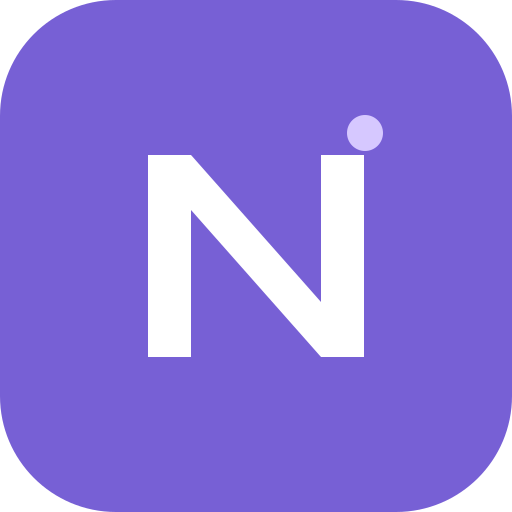

Write, draw, and paste
Type anywhere, write with a pen or finger, and paste desktop screenshots directly onto a board. Set a constant pen width and lock the zoom while moving around.

NoteNote brings typed notes, handwriting, screenshots, and diagrams together on infinite boards. Organize them in nested folders and find the ideas you need across your workspace.
Open NoteType anywhere, write with a pen or finger, and paste desktop screenshots directly onto a board. Set a constant pen width and lock the zoom while moving around.
Create folders inside folders. Search board names, typed notes, recognized image text, and reviewed handwriting text within a folder and its subfolders.
Choose Continue with Google to sign in or create your Note account before opening your workspace. Note remembers a valid login and syncs your folders and boards through Supabase. Each account has its own workspace.
Google sign-in requests basic account information and permission to manage files created by Note or explicitly authorized for it. Images go into your own private “Note images” folder. Supabase Storage is an alternative.
Note works on desktop and mobile browsers and can be installed as a web app where supported. A valid remembered login lets you reopen cached boards, including offline while that login remains valid. Export a workspace backup from Settings to keep your own copy. This instance is maintained by the GitHub account augustof2022. Support: renz.r.salvador@gmail.com.
Read the full version history for the latest changes and earlier releases.